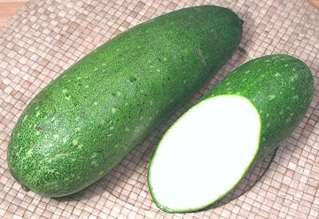
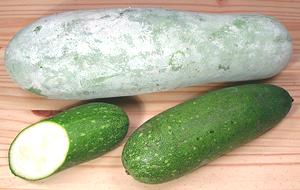

Fuzzy Melon

[Hairy Melon; Heari Meron (Japan (got that?)); Mo Qua, Mo Gwa, Moa Gua,
Tseet Gwa, Doongua, Cham Kwa (China); Timum Balu (Malay); Faeng, Fock (Thai); Winter Melon
(Thai in English); Bi (Viet); Tougan (Japanese); tankoy, kundol (Filipino);
petha, kaddu (Indian);Benincasa hispida var chiehgua]
A variety of the large to gigantic
Ash Gourd that's picked and eaten at a much earlier stage of
growth. In this stage it's covered with short bristles, thus the name,
but by time I get them home most have rubbed off. Many recipes say to
peel them, but you'll have more flavor and more melon if you just scrape
them, just taking the dark green skin.
Asian recipes usually presume they are about 1/2 pound, but here in
Los Angeles they run from 3/4 pound to a shade over 2 pounds. The photo
specimen was 9 inches long, 3 inches diameter and weighed 1 pound 9 ounces.
The lower photo shows the same melons along with a mature Winter Melon
(a very small one).
More on Gourds.

Buying:
Large numbers of Fuzzy Melons are now grown in
California so they're easy to find in markets serving Southeast Asian,
Chinese and Indian communities. Look for nice bright melons, heavy for their
size, and without soft or discolored spots. Melons weighing 1 pound are good,
but I haven't seen much difference up to 2 pounds. Asian recipes usually
presume long melons weighing about 1/2 pound.
Storage:
Whole gourds, if in good condition, have lasted
some days just sitting on my kitchen floor, but loosely bagged in the
refrigerator they should last a couple of weeks if undamaged. Once cut they
will keep refrigerated for less than a week.
Prep:
Most recipes call for peeling, but a better plan is
to just scrape off the outer dark green fuzzy skin with the back edge of
your prep knife. This gives you more flavor and more melon for your money.
Cooking:
Fuzzy melon is used in soups and stir fries, and
in India in curries. It is very tender and delicate but, as with other gourds,
chunks hold their shape well compared to squash. Most recipes call for
cooking for about 5 minutes, but this varies - cook until the slices are
mostly translucent.
gd_fuzzyz* 100105 - www.clovegarden.com
©Andrew Grygus - agryg@clovegaden.com - Photos on this
page not otherwise credited are © cg1 -
Linking to and non-commercial use of this page permitted